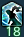

Healer abilities
Official jobguidesSAGE
| Visuals | CD | Description |
|---|---|---|
  |
30s | Kerachole 10% mitigation + low regen for 15s. |
| This is the staple for all raid damages, due to its double part regen, keep an eye out for it being used early before raid damage, as it can save you topping the group yourself. | ||
 |
60s | Physis II Medium regen for 15s + 10% action healing buff for 10s. |
| Healing buff icon on the left, regen part on the right. It being healing action potency buff, it will only affect GCD healing, meaning most of the time you can forget this part. The regen is definitely potent however, so keep an eye out for it as it will have around 25% uptime. | ||
|  | 120s | Holos 10% mitigation for 20s + medium heal. |
| The 20s duration is the very unusual part about this skill. Very efficient on long mechanics with lots of repeat damage. The healing part means you don't have to top if you know your sage is gonna use it. | ||
  |
120s | Panhaima 5 times self-reapplying low shield for 15s. Leftover shields heal based on stacks left. |
| Very useful for repeat mechanics, as above. Do not forget the healing part, as it will rarely ever use its five stacks in 15s. | ||
 |
120s | Pneuma High to Very High burst healing. |
| Much harder for you to keep track of, however you should keep it in in mind as it comes to no DPS loss for the Sage and is extremely potent. | ||
SCHOLAR
ASTROLOGIAN
WHITE MAGE